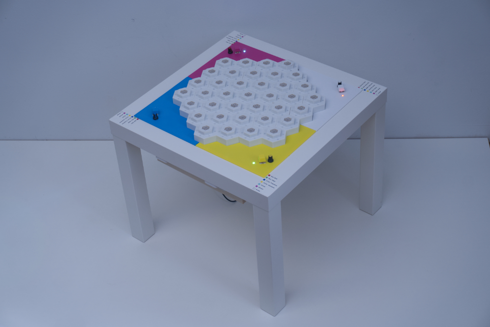
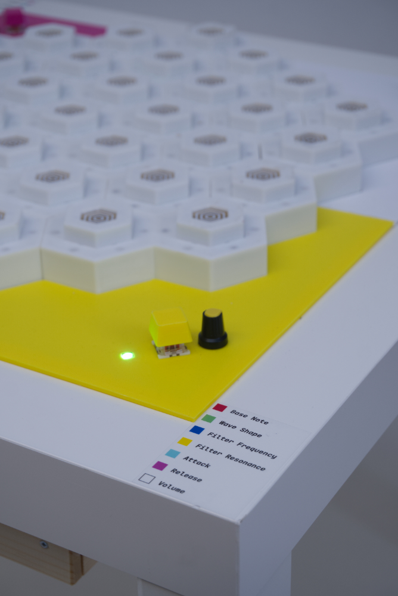
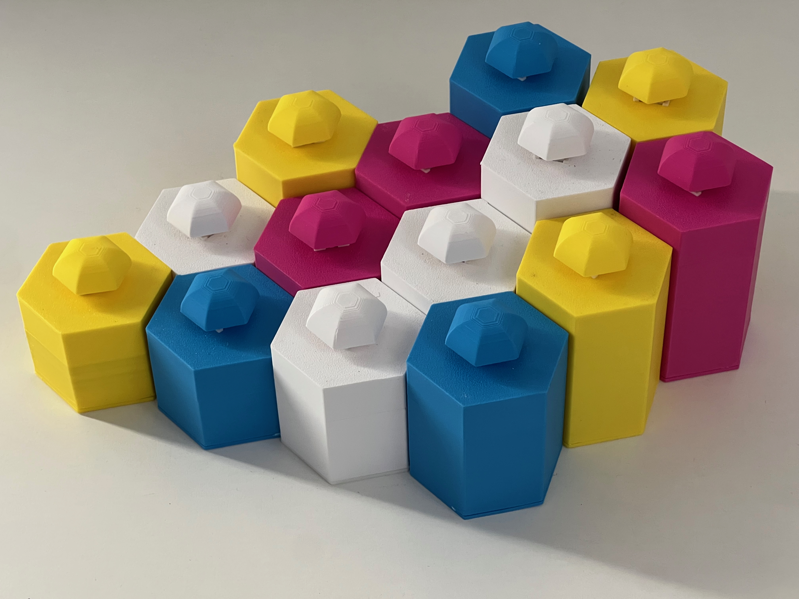

Mycelia
Attiny412, Teensy4.1, 3D printing, Fusion, PCB design
Mycelia is a synthesizer inspired by mycorrhizal networks. It uses the ATtiny412 for each pillar module and the Teensy 4.1 for the main controller. The ATtiny412 and Teensy are connected through a custom-designed pogo connector system and communicate via analog voltage levels. This allows the Teensy to identify the color and height of each pillar and play different sounds accordingly. Users can control the sound using the knobs and buttons on each color panel. When a pillar stands independently, the sound plays only once, but if there are adjacent pillars, it randomly transmits the signal to the neighboring pillars.
The model was designed using Fusion, 3D printed, and then assembled.
This work is partly sponsored by HEC.


